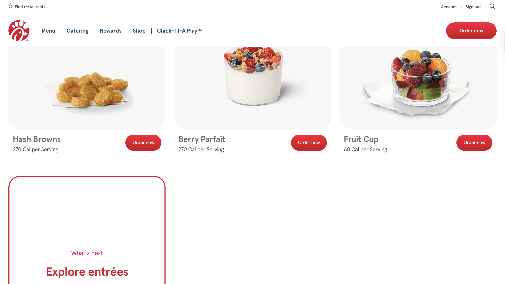
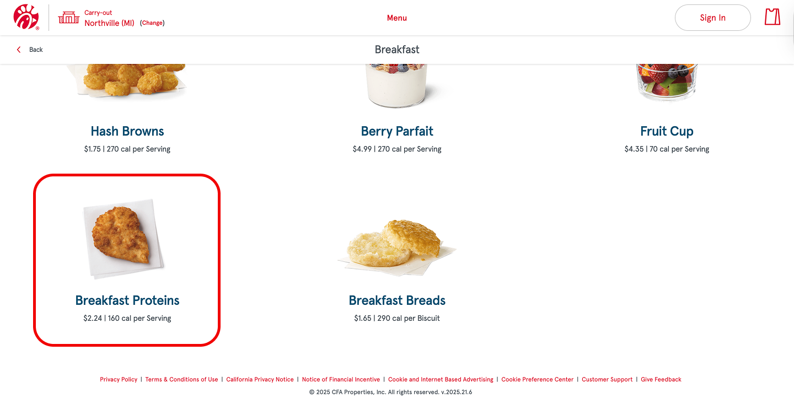
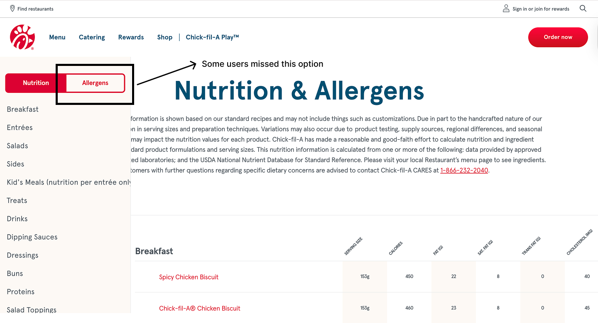
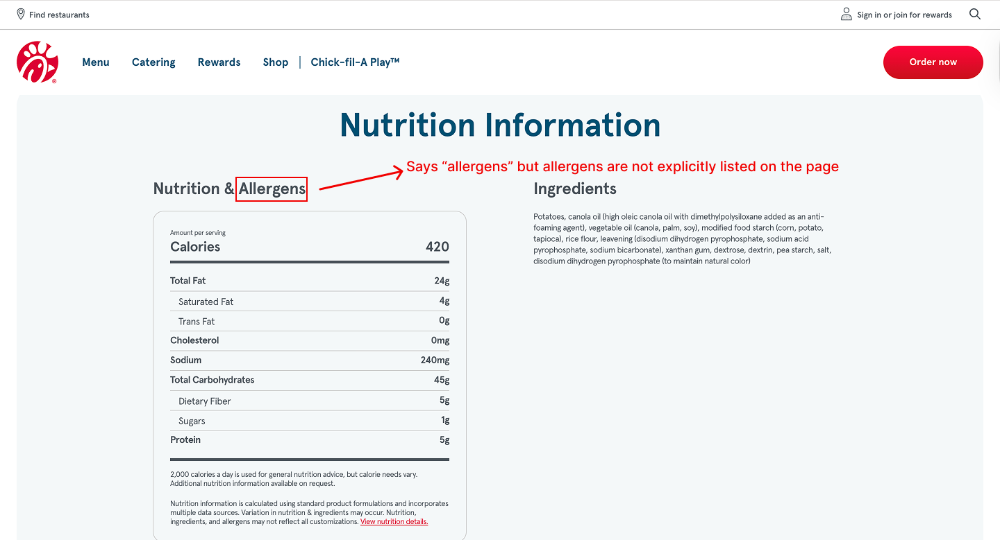
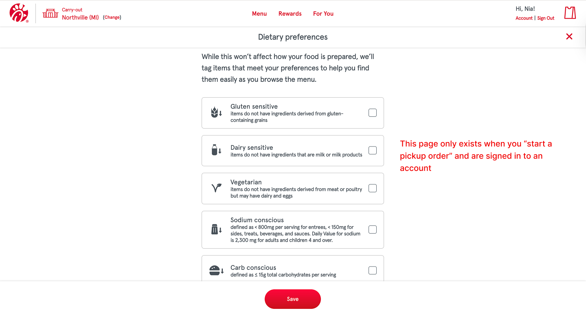
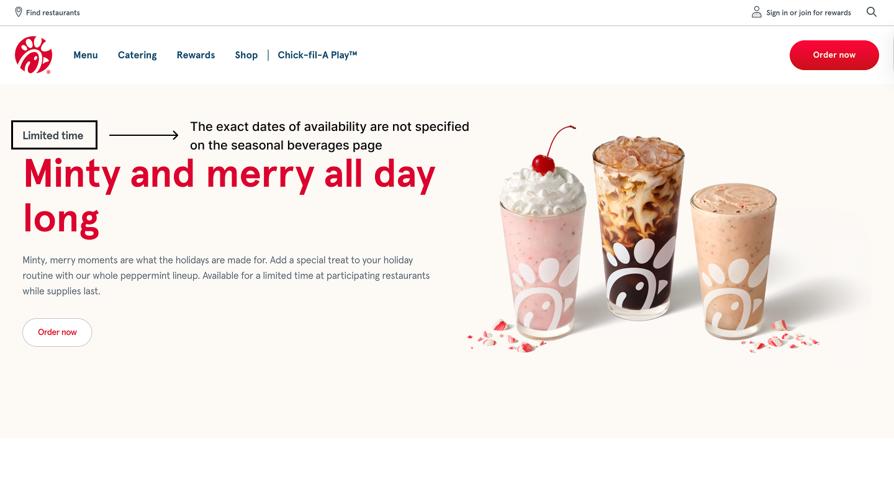
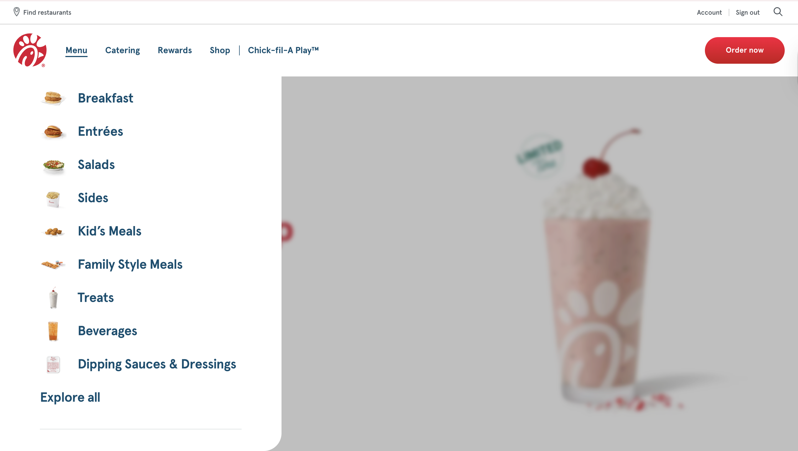
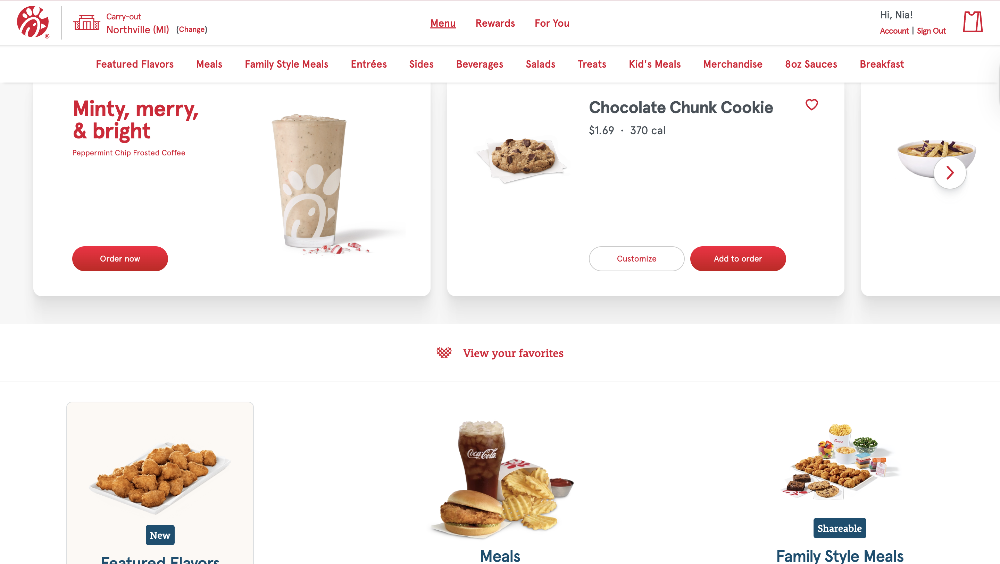

Project Overview
Title: Chick-fil-A's Website Usability Test
Test Details Formal usability test; 3 participants
Team & Timeline: This was a solo project; November 24th, 2025 - December 5th 2025
Role: UX Researcher
Tools: Google Sheets, Google Docs
Table of Contents
Objective
The objective of this test is to assess how easily users can discover Chick-fil-A's hours of operation, locate nutritional and allergen information, and understand Chick-fil-A's reward program. Participants will include individuals who have used restaurant websites before, and exclude individuals who visit Chick-fil-A's website more than once a week.
Tasks & Expected Paths
- Find the closest Chick-fil-A location and see its hours of operation.
- Expected Path 1: Click "Find a Restaurant” at the top of the page > Enter zip code > Find the closest location and click “View Details” > Scroll down to view the location's hours of operation.
- Expected Path 2: Click “Find a Restaurant” > Click “Use my location” > Find the closest location and click “View Details” > Scroll down to view the location's hours of operation.
- Find out the amount of calories that are in the spicy breakfast filet.
- Expected Path: Open the Menu, scroll to the bottom and click "Nutrition & Allergens" > Navigate to the “Proteins” tab > Read the "Calories" section of the table for the breakfast and lunch spicy filets.
- Determine how much sodium is in the Light Italian Dressing.
- Expected Path: Stay on the "Nutrition & Allergens" page > Navigate to the “Dressings” tab > Read the “Sodium” section of the table for the Light Italian Dressing.
- Find out if the Waffle Potato Fries are safe for a gluten allergy.
- Expected Path: Stay on the "Nutrition & Allergens" page > Toggle from the “Nutrition” tab to the “Allergens” tab > Navigate to the “Sides” tab > Find the Waffle Potato Fries and see if there is a checkmark under the “Wheat” section of the table.
- Compare the serving sizes for the Chilled Chick n' Strips catering tray
- Expected Path: Click the "Catering" link in the navigation bar > Click the “Trays” link in the navigation bar > Find the option for the chilled chick n' strips > Click the card image > View the different serving options.
- Find all the vegetarian and vegan options offered on the menu.
- Expected Path 1: Scroll to the footer and click “Customer Support” > Locate the “Our Food” card and click the “Our Menu” sub link > Scroll and find the “Do you offer any vegan or vegetarian items on the menu?” FAQ tab.
- Expected Path 2: Scroll to the footer and click “Customer Support” > Search something like “vegetarian and vegan options” > Click the “Do you offer any vegan or vegetarian items on the menu?” FAQ tab, which is first.
- Find out the last day the Peppermint Chip Milkshake is available at Chick-fil-A.
- Expected Path: Stay on the “Customer Support” page > Search something like “seasonal beverages” > Click the “When and Where the Peppermint Chip Milkshake and Holiday Seasonal Beverages and Treats Available?” FAQ tab.
- Determine how much sugar is needed for Chick-fil-A's Cherry Berry Biscuit Jelly recipe.
- Expected Path 1: Stay on the “Customer Support” page > Locate the “Our Food” card and click the “Recipes” sub link > Click the “Where can I find Chick-fil-A Recipes?” FAQ tab, which is first > Click the hyperlink “The Feed” > Scroll down until you see “Want to see more recipes?” then click the “See all” button > Scroll until you see “Cherry Berry Biscuit Jelly” then click it > Locate the “Ingredients” section to see how much sugar it needs.
- Expected Path 2: Stay on the “Customer Support” page > Search something like “recipes” or “Cherry Berry Jelly recipe” > Find and click the “Where can I find Chick-fil-A Recipes?” FAQ tab > Click the hyperlink “The Feed” > Scroll down until you see “Want to see more recipes?” then click the “See all” button > Scroll until you see “Cherry Berry Biscuit Jelly” then click it > Locate the “Ingredients” section to see how much sugar it needs.
- Find the different memberships for the Chick-fil-A One rewards program.
- Expected Path 1: Navigate to the “rewards” link in the navigation bar > Scroll down to the “You benefits get better at each tier” section > Read through each membership tier tab.
- Expected Path 2: Stay on the “Customer Support” page” > Locate the “Chick-fil-A One Membership Program” card and click the “Benefits & tiers” sub link > Click the “What are the Chick-fil-A One Membership tiers” FAQ > Click the “Chick-fil-A One page” hyperlink > Scroll down to the “You benefits get better at each tier” section > Read through each membership tier tab.
- Determine which rewards member plan does not allow you to give rewards to friends and family.
- Expected Path: Stay on the rewards page > Read through each membership tier tab.
Key Usability Issues & Recommendations
Problem 1: (3/3) Users assumed the spicy breakfast filet would appear under the breakfast tab, and were confused when it was not there.
Initial Breakfast Page:
Breakfast Page after starting a pick-up order:
- Recommendation Since the spicy breakfast filet is an actual menu item (as well as other filets), it is recommended that it be present on the initial home page of the site. Users should not have to start a pickup order in order to know that the item is offered.
Problem 2: (2/3) Users were already on the “Nutrition & Allergens” table, but exited out of the page and navigated to the “Waffle Potato Fries” page when they were tasked with determining if the Waffle Potato Fries are safe for a gluten allergy.
Problem 3: (1/3) A participant noticed the “allergens” tab in the sidebar of the “Nutrition & Allergens” table and navigated to it, per the expected path, but once they did not see “gluten” explicitly listed as a table category, they navigate to the “Waffle Potato Fries” page to determine if the Waffle Potato Fries are safe for a gluten allergy, similarly to the other 2 participants.
 - Recommendation Make the “allergens” tab of the sidebar more apparent, and include all the nutrition and allergen information for each menu item on that menu item's designated page, so that users do not have to navigate to a completely different page to determine if an item meets their dietary preferences.
Problem 4: (3/3) Users did not see a clear way to determine what all the vegan and vegetarian options are on the menu, so they went through each menu item to make the determination themselves.
- Recommendation The “dietary preferences” page only exists if the user starts a pick up order, so it is recommended that you include this page on both versions of the site.
Problem 5: (3/3) Users were only able to determine that the Peppermint Chip Milkshake was available for a “limited time,” but they were unable to determine the exact dates of which the item is available. Each participant assumed the exact dates would be present on the Peppermint Chip Milkshake page.
- Recommendation Include the exact start and end date for the availability of the seasonal beverages on their designated page, so users know exactly when the items will no longer be available.
Problem 6: (1/3) A participant was met with a differently structured site after entering the “start a pickup order” page. This newly structured site had a different navigation structure, as well as missing elements that were once present, like the “search” option. Also, three key elements (that would have been useful for participants to complete tasks 2, 5, and 6) are missing from this differently structured page. The filets are present as a menu item, there is a “Dietary Preferences” page (that includes check box options like “vegetarian,” and “gluten sensitive), and the “catering” option is no longer present in the navigation, which caused P3 to not complete task 5 (while P1 and P2 completed it in less than 1 minute).
Version 1 (initial home page):
Version 2 (home page after starting a pick-up order):
- Recommendation Ensure that there is page setup consistency so that users are able to find what they are looking for regardless of what page they are on.
Other Identified Issues
- (1/3) Users felt the “Find Restaurant” button was too small, as they nearly missed it when trying to complete task 1.
- (1/3) Users felt the labels in the nutrition & allergen table were too small. They also did not like that the labels were diagonal, meaning you have to tilt your head to read them. Lastly, they did not think having to scroll the right on the table to see all the categories was very intuitive.
- (2/3) Users did not like that the nutrition and allergen information were located on a different page. (1/3) User said it is “annoying” that the information is located on a separate page.
- (1/3) Users felt the order of the items in the sidebar of the nutrition & allergen table was confusing.
- (1/3) User believed it would be easier to discover Chick-fil-A recipes if the link to the recipes page existed in the “explore all” page.
- (1/3) Users believe the menu is easy to navigate if you are someone who is familiar with it, suggesting it is harder for newer users to navigate the menu successfully.
- (1/3) User believes the website is easy to navigate, but thinks it could benefit from having better organization.